Appelez ou écrivez
Par téléphone au 0693 51 83 87 ou en message privé sur Facebook, à tout moment.
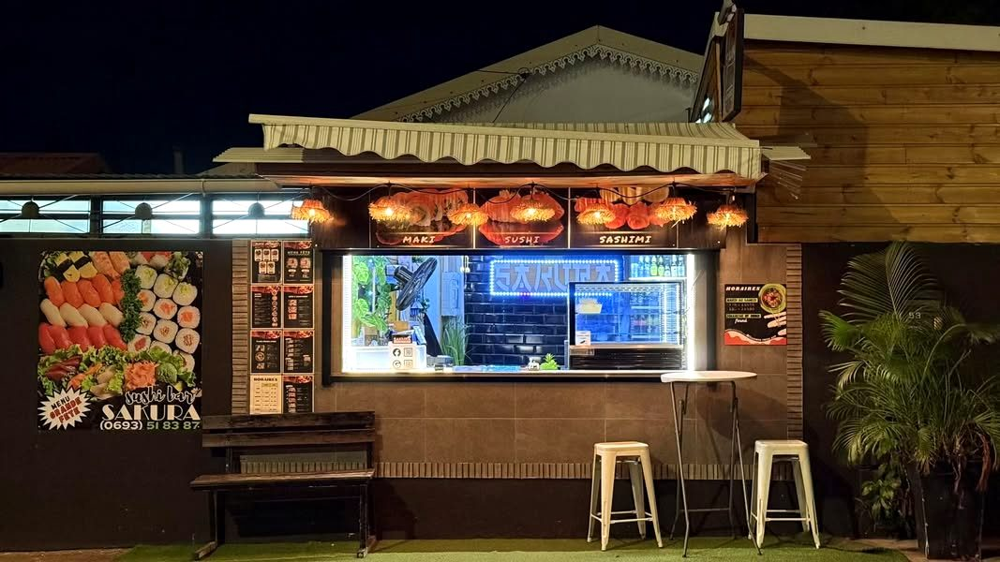
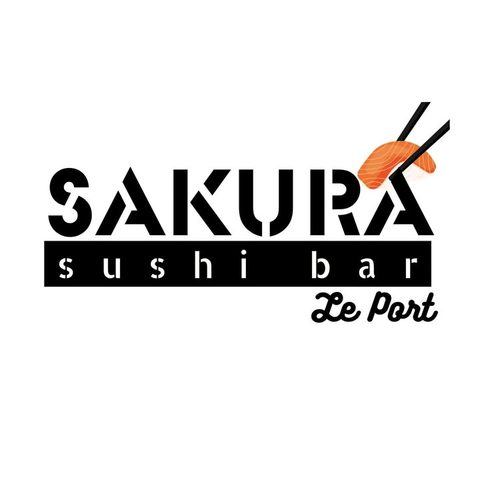
Sakura Sushi Bar53 rue Mahé de Labourdonnais · Le PortKonnichiwa !
100 % faits à la main, au comptoir du Port. Réservez la veille, votre plateau vous attend le lendemain. Arigatō !
★ 4,7 / 5 sur Google · Restaurant japonais authentique
Le secret de la fraîcheur
Chez Sakura, chaque plateau se prépare pour vous. En réservant un jour à l'avance, vous gagnez un plateau prêt à l'heure, et l'équipe prend le temps de tout rouler avec soin.
Nos sushis sont 100% faits à la main donc la préparation demande du temps.Sakura Sushi Bar, sur sa page Facebook
Par téléphone au 0693 51 83 87 ou en message privé sur Facebook, à tout moment.
Un jour à l'avance, ou le midi pour un retrait le soir même.
53 rue Mahé de Labourdonnais, au Port. Livraison aussi possible via Uber Eats.
À partager… ou à savourer
Sushis, makis et sashimis réunis dans de beaux plateaux, à composer pour vos soirées.
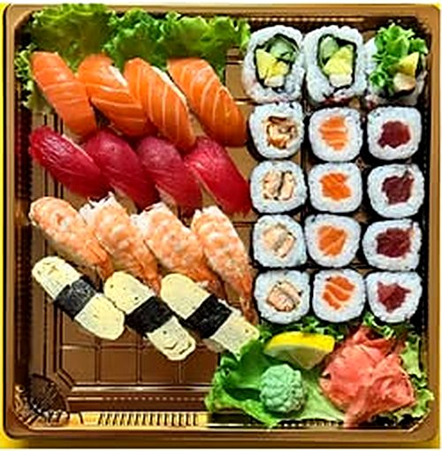
15 sushis · 15 makis
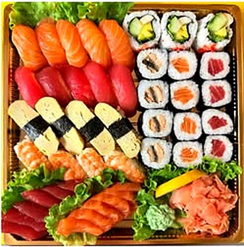
18 sushis · 15 makis · 12 sashimis
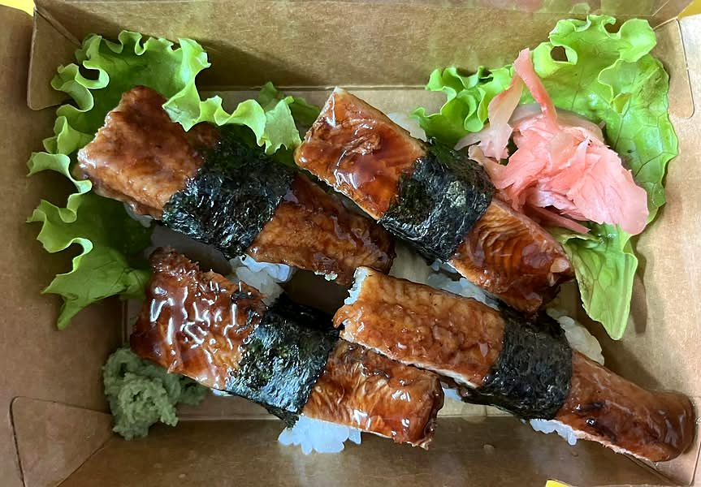
L'anguille laquée, fondante et caramélisée.
Tarifs repris de vos publications Facebook (menu fête du 12/02/2026, sushi anguille du 25/06/2025), à actualiser ensemble.
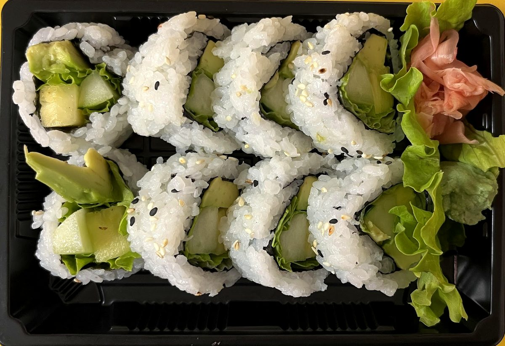
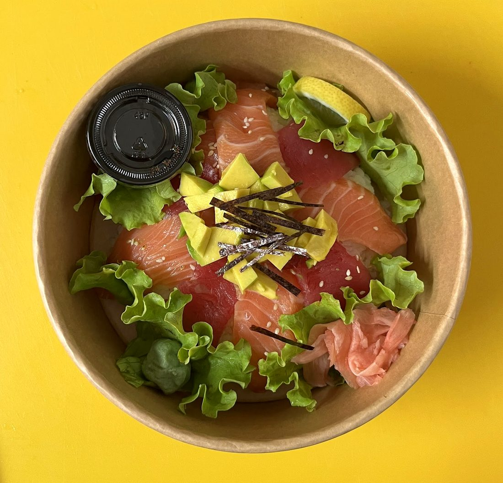
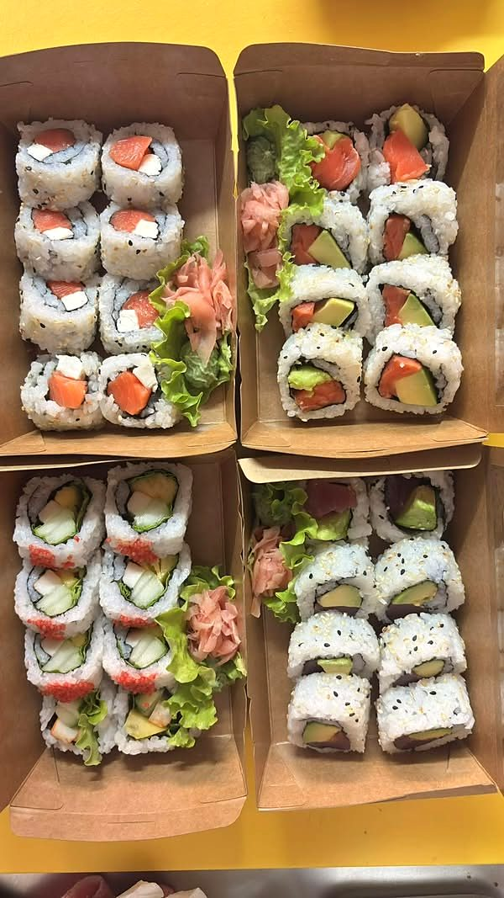
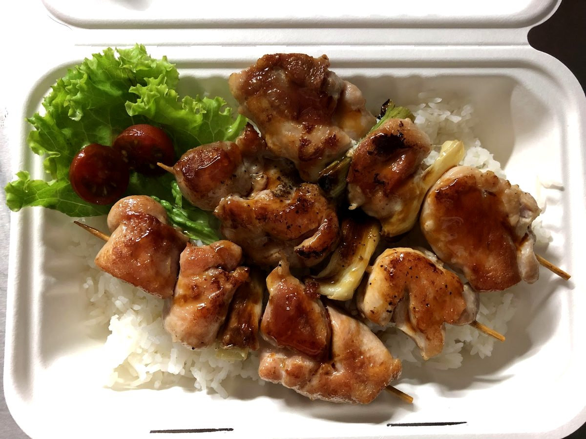
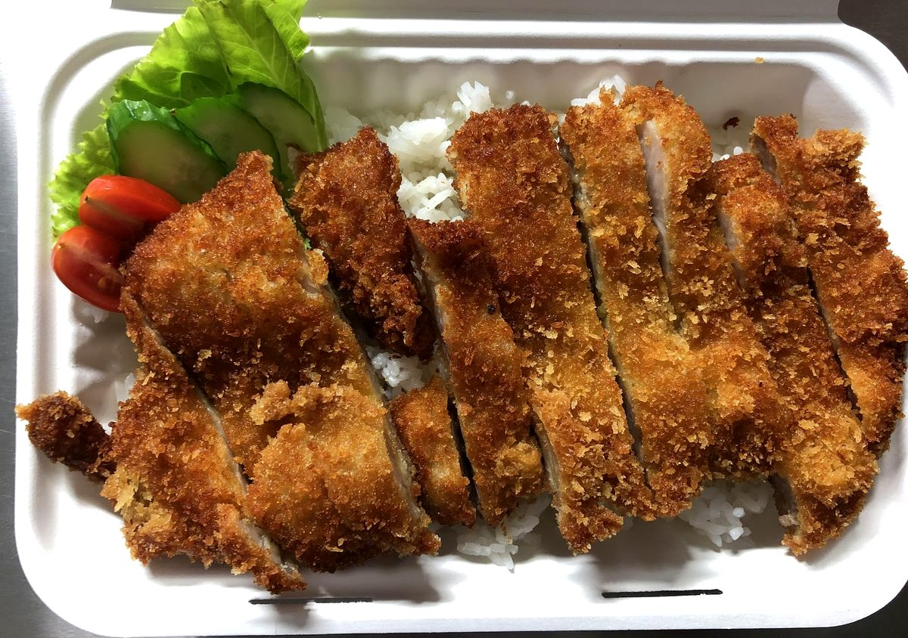
Faites glisser pour découvrir la cuisine →
Un petit coin de Japon au Port
Mont Fuji au soleil levant, pont rouge, pagode et branches de sakura : depuis octobre 2026, la fresque signée Kony Cho Art accueille chaque client rue Mahé de Labourdonnais.
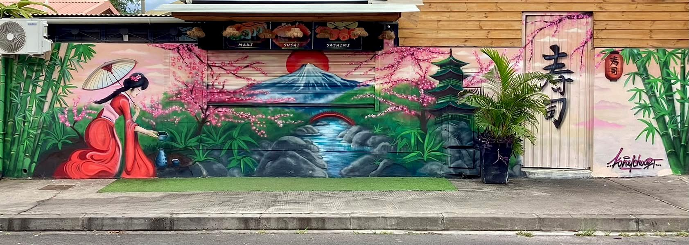
Fresque réalisée par Kony Cho Art, octobre 2026.
Ils en parlent
J'ai essayé un midi et Une tuerie ! Sushis ultra frais, riz parfaitement assaisonné et fondant, poisson fond en bouche.Ketty A., avis Google
Une excellente découverte ! Nous avons pris à emporter et nous nous sommes vraiment régalés. Les sushis étaient délicieux, frais et très bien préparés.Loic V.-H., avis Google
… sa fait longtemps que je commande chez eux et ils sont vraiment adorables le service top ,les sushi !!! Trop bonPrisca N., avis Google
Pour demain
Choisissez vos plateaux et le jour de retrait : votre récapitulatif est prêt à envoyer à Sakura en message privé, ou à lire au téléphone.
Horaires
| Lundi | 18h – 21h |
| Mardi | 11h – 13h · 18h – 21h |
| Mercredi | 11h – 13h · 18h – 21h |
| Jeudi | 11h – 13h · 18h – 21h |
| Vendredi | 11h – 13h · 18h – 21h |
| Samedi | 18h – 21h |
| Dimanche | Jour de repos |
Nous trouver
53 rue Mahé de Labourdonnais
97420 Le Port, La Réunion
Itinéraire Google Maps →
0693 51 83 87
bar.sakura97420@gmail.com
Page Facebook Sakura Sushi Bar
Français, anglais et filipino.